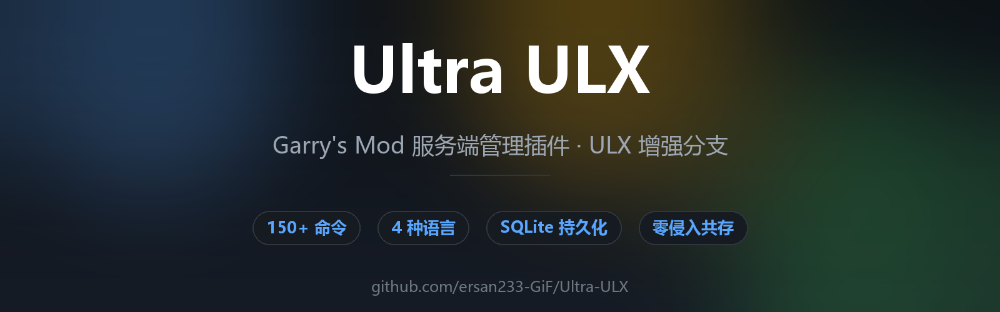

Ultra ULX
基于 Team Ulysses ULX 的增强分支 · 完全中文化 · 150+ 命令 · 4 种语言 · SQLite 持久化 · 零侵入共存


基于 Team Ulysses ULX 的增强分支 · 完全中文化 · 150+ 命令 · 4 种语言 · SQLite 持久化 · 零侵入共存

从日常管理到娱乐互动，一站式覆盖
多级用户组 + 细粒度权限 + SQLite 持久化 + 30 份自动备份 + 损坏恢复
分级警告（3次禁言 / 5次封禁）、限时禁言禁聊、IP 封禁持久化
封禁 / 踢出 / 传送 / 换图 / 清理 / 重置，覆盖日常运维
50+ 娱乐互动：slap / ragdoll / freeze / ignite / 火箭 / 颜色…
玩家投票换图 / 踢人 / 封禁，支持 MapVote / GMVote
全功能图形管理界面，无需记忆命令即可完成所有操作
CS:S 标准自动连跳，含坡度补偿与 SetupMove 保活
9 类 70+ 预设物品，智能碰撞检测（武器 / 载具 / 道具）
简体中文 / English / Русский / 文言文，客户端自由切换
屏幕 HUD + 头顶坐标，4 种可见模式
可调跳跃倍率 + 蹲行速度 + 自动解锁
独立数据目录，删除即恢复原版 ULX，无残留
三步完成部署
安装后需在服务器控制台执行 ulx adduserid <你的SteamID> superadmin 获取管理员权限。
克隆仓库 git clone https://github.com/ersan233-GiF/Ultra-ULX.git
将仓库中的 Ultra ULX 文件夹直接复制到 garrysmod/addons/（无需解压）
重启服务器
点击命令即可复制 · 支持搜索
| 命令 | 说明 |
|---|---|
!bring 玩家 | 把目标传送到自己面前 |
!goto 玩家 | 传送到目标身边 |
!ban 玩家 分钟 原因 | 封禁玩家 |
!kick 玩家 | 踢出玩家 |
!mute / !gag 玩家 | 禁言 / 禁聊 |
!warn 玩家 原因 | 警告玩家（3次禁言/5次封禁） |
!freeze / !ragdoll 玩家 | 冰冻 / 变布娃娃 |
!god / !noclip | 无敌 / 飞天穿墙 |
!slap / !slay 玩家 | 拍打 / 处决玩家 |
!jail 玩家 秒数 | 关禁闭 |
!cleanup | 清理场景道具 |
!coordhud | 坐标 HUD |
!bhop | 开启自动连跳 |
!who | 查看玩家列表与 SteamID |
!version | 查看版本信息 |
!menu | 打开 XGUI 全功能管理面板 |
客户端自由切换，无需重启 · 点击命令复制
ulx_lang zh-cnulx_lang enulx_lang ruulx_lang lzh遇到问题先看看这里
addons/Ultra ULX/lua/ 必须直接存在。ulx adduserid <你的SteamID> superadmin。SteamID 可用聊天框 !who 查看。ulx_lang zh-cn 切回中文。addons/Ultra ULX/ 文件夹（可选删除 data/ultra_ulx/），重启服务器即恢复原版 ULX。v2.98.52